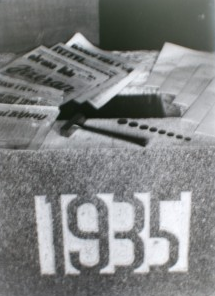

Základní informace
Ve školním roce 2018/2019 je na naší škole 14 tříd na
1. stupni a 10 tříd na 2. stupni. Školu navštěvuje 608 žáků.
V tomto roce byla nově otevřena
přístavba školy, kde se nachází chemická
laboratoř, učebna chemie, počítačů a jazyků.

Vzdělávací oblast
1. stupeň
1. – 5. ročník:
dle ŠVP “Škola bez stresu”
2. stupeň
6. – 9. ročník:
dle ŠVP “Škola bez stresu”
Od 1. ročníku jsou ustanoveny sportovní třídy se zaměřením na lední hokej.
Priority ŠVP
– výuka AJ od 1. ročníku
– výuka informatiky od 5. ročníku
– výuka druhého cizího jazyka – německý, ruský jazyk od 7. ročníku
Volitelné předměty
7. ročník:
konverzace v AJ
přírodovědná praktika
výtvarné projekty
8. ročník:
konverzace v AJ
literární seminář
výtvarné projekty
pracovní výchova – chemický seminář, technické práce v dílnách
9. ročník:
matematické praktikum
konverzace v AJ
Zájmové kroužky
aerobik
pěvecký kroužek
anglický jazyk
základy francouzského jazyka
keramika
malý šikula – práce v dílnách
šikovné ruce
sportovní hry

Historie školy
Historie naší základní školy
se datuje od roku 1935, kdy byl položen základní kámen. Za pouhých 10 měsíců
od této doby, 1. září 1936, byla za přítomnosti
Dr. Edvarda Beneše, po němž získala své pojmenování, otevřena.
V období 2. světové války budova sloužila jako vojenský lazaret.
Po skončení války se
stala nejprve dívčí školou a až v 50. letech zde byly běžné třídy, a to
vždy dvě v ročníku.
Několik čísel pro srovnání. V r. 1989 školu navštěvovalo 340 žáků, v r.
1993, kdy se zde začalo vyučovat podle programu Obecná škola, to bylo 610 žáků,
což je největší počet v
celé její historii. V současné době je ve škole 575 žáků ve 22 třídách.
